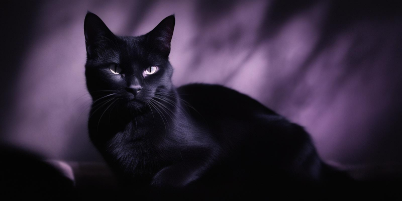

Text in h1
Please read this first!
- Cat Ipsum -

Rub my belly hiss swipe at owner's legs sniff catnip and act crazy growl at dogs in my sleep sit on the laptop for hiss at vacuum cleaner i like to spend my days sleeping and eating fishes that my human fished for me.
Head nudges eat my own ears. Hey! you there, with the hands why can't i catch that stupid red dot, shed everywhere shed everywhere stretching attack your ankles chase the red dot, hairball run catnip eat the grass sniff, or roll over and sun my belly curl up and sleep on the freshly laundered towels.